Lecture 7: RAG, Tool Calling, and Agents
Video blocked (ad-blocker or local file mode).
Watch on YouTubeVideo not loading? Watch on YouTube
Original lecture. RAG, tool calling, and agentic workflows with the teddy bear examples.
The problem: the model is frozen in time
A trained model knows only its training data. Ask about an election held two weeks after the cutoff and it guesses or refuses. Model cards print the date: the lecture cites GPT-5’s knowledge cutoff as September 30, 2024 (08:13), with a 400,000-token context window (11:09).
Two naive fixes fail. Retraining on new data risks regressions on old capabilities and multiplies maintenance across every fine-tuned use case. Dumping everything into the prompt fails three ways: context is finite (400,000 tokens is hundreds of pages, not the internet). Irrelevant context degrades performance, as needle-in-a-haystack tests show (12:02): facts buried in the first half of long prompts get lost. And you pay per input token, order of $1 per million.
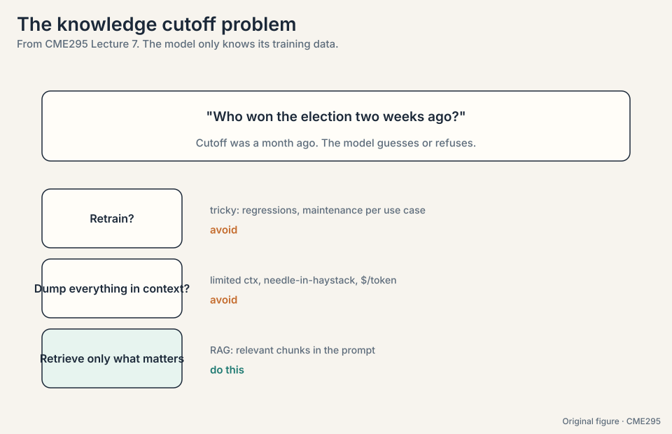
The key question
The model weights are frozen at training time. How do you give a frozen model fresh, private knowledge without retraining it?
RAG: retrieve, augment, generate
RAG stands for Retrieval Augmented Generation (15:16). The idea: augment the prompt with relevant information, where “relevant” does all the work.
- Retrieve. Given the question, fetch relevant chunks from a knowledge base.
- Augment. Paste the retrieved chunks into the prompt alongside the question.
- Generate. The LLM answers with the evidence in context.
The local-election example: “who won?” becomes “who won? By the way, here is the results article: …”. The prompt now contains the answer. The model just has to read it. Retrieval quality is the whole game: a bad retriever poisons the prompt.
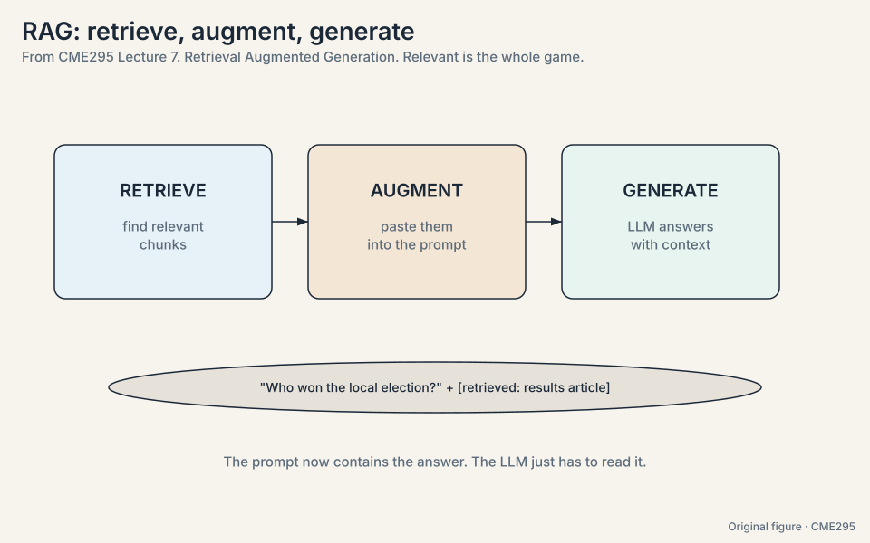
Subchapter: RAG vs long context, the decision rule
When context windows reach 1M tokens, why retrieve at all? Three reasons RAG survives. Cost: 1M input tokens cost ~$1 per query. retrieval plus 5K tokens costs cents. Quality: needle tests show facts buried in long prompts get lost. 5 relevant chunks beat 500 pages of noise. Freshness: the index updates in minutes, the weights never do. The decision rule: use long context when the document set is small and fixed (one contract, one codebase). Use RAG when the corpus is large, changing, or bigger than the window. Most production systems use both: retrieve into a long window.
The question embeds to a vector. Stage 1: cosine-similarity against 2,000 chunk embeddings (the ANN index), top 100 by recall. Stage 2: cross-encoder scores the 100 pairs, top 10 by precision. Augment: the 10 chunks join the prompt after the question. Generate: the model reads the results article in context and answers. If the retriever missed the article, the model hallucinates or refuses: retrieval is the whole game. Chunking. The answer spans a chunk boundary, or the chunk is too big for one embedding to represent. Fix chunking before tuning the retriever.
The generator is a reader. If the retrieved chunks contain the answer, a decent model extracts it. If they do not, no generator recovers: it either hallucinates or refuses. RAG system work is retriever work. When the knowledge is stable and universal enough to live in weights (grammar, common facts), or when the answer needs computation rather than lookup. RAG serves fresh, private, or long-tail knowledge.
The problem: documents are too big to embed
A document is a million tokens. An embedding vector must represent it in a few thousand numbers. One vector for a whole book loses everything. The fix is chunking (20:08): contiguous pieces of a few hundred tokens (typically ~500). Each chunk gets an embedding vector from an encoder model.
Count it: 1,000,000 tokens at 500 tokens per chunk = 2,000 chunks. At 1,500 dimensions and 4 bytes each: 2,000 * 1,500 * 4 = 12 MB. Searchable, storable.
Three hyperparameters, each a tradeoff:
- Chunk size (~500 tokens). Too small and the chunk loses context. Too large and one embedding cannot represent the content faithfully.
- Overlap (low hundreds of tokens). Carry the tail of the previous chunk so cuts do not strand meaning.
- Embedding size (thousands, e.g. ~1500, 21:20). Bigger captures nuance. Smaller is cheaper to store and search.
Use a pretrained embedding model (typical) or train your own. The lecture’s recommended read is Sentence-BERT: its loss pushes relevant pairs to high cosine similarity and irrelevant pairs low.
Watch similarity on a toy. Two-dimensional embeddings:
query "who won the election" = [1.0, 0.2] chunk A (results article) = [0.9, 0.3] cosine = 0.99 chunk B (unrelated sports news) = [0.1, 1.0] cosine = 0.29
Cosine similarity is the dot product normalized: A matches, B does not. The retriever returns A.
Subchapter: chunking strategies
Three ways to cut documents:
- Fixed-size (the lecture’s default): every ~500 tokens with overlap. Simple, predictable, occasionally cuts mid-thought.
- Semantic: split where the topic shifts (embedding similarity between adjacent sentences drops). Respects meaning, costs an extra embedding pass, chunk sizes vary.
- Structural: split on document structure (headings, paragraphs, code blocks). Best when the corpus has real structure (docs, wikis, repos). Fails on flat prose.
The decision rule: structural for structured corpora, semantic for long prose, fixed-size as the baseline everything else compares against. Overlap (100-200 tokens) applies to all three: never let a cut strand a sentence.
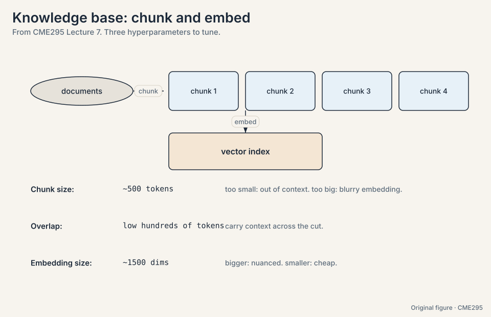
The problem: searching millions of chunks
Borrowed from search and recommenders, retrieval runs as a funnel (24:29). Watch the numbers shrink:
stage 1, candidate retrieval: 1,000,000 chunks -> top 100 stage 2, reranking: 100 candidates -> top 10
Stage 1 embeds the query and cosine-similarities it against all chunk embeddings. This is the bi-encoder setup (46:55): query and chunk encoded independently, compared fast. Goal: recall. Approximate nearest neighbor (ANN) indexes avoid the naive linear scan over millions of chunks.
Stage 2 feeds query and chunk together into a cross-encoder (46:43) that outputs one relevance score, with full attention between the two. Slower per pair, affordable on 100 candidates. Goal: precision. Keep the top k.
Subchapter: ANN indexes in one pass
A linear scan over 1M chunks x 1,500 dims = 1.5B multiply-adds per query: too slow. Three index families:
- IVF (inverted file): cluster chunks into ~1,000 cells. Search the nearest ~10 cells. 100x fewer comparisons, misses chunks near cell borders.
- HNSW (hierarchical navigable small world): a graph where each chunk links to neighbors, layered coarse-to-fine. Greedy walk from the top layer down. The default choice: fast, accurate, memory-hungry (the graph lives in RAM).
- PQ (product quantization): compress each vector to ~100 bytes. 15x less memory, approximate distances. Pair with IVF (IVF-PQ) for billion-scale on one machine.
The decision rule: HNSW under ~100M vectors when RAM allows, IVF-PQ past that. Recall is the tuning knob: nprobe (IVF) or ef (HNSW) trades latency for recall. Measure recall@100 on your own labels: the index is only as good as its tuning.
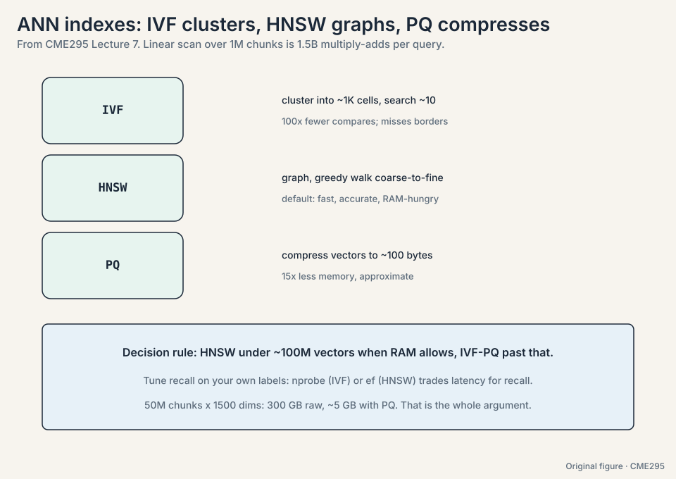
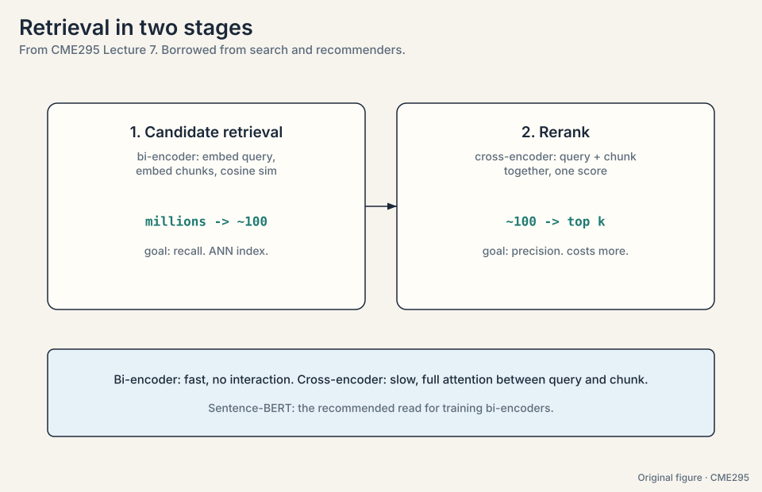
IVF-PQ. 50M x 1,500 dims x 4 bytes = 300 GB raw: too big for RAM comfort. PQ compresses to ~100 bytes per vector: 5 GB. IVF with ~50K cells, nprobe ~100 for recall. HNSW would need the full vectors plus the graph in RAM: ~350 GB, not viable. Tune on labeled queries: raise nprobe until recall@100 plateaus, then stop. The decision rule: compress when RAM binds, graph when it does not. IVF centroids go stale and PQ codes drift. Rebuild periodically, or use HNSW (incremental inserts are native) for the hot shard and IVF-PQ for the frozen bulk.
The problem: meaning is not enough
Embedding search is semantic: it matches meaning, with no keyword guarantee. The lecture’s test: “where is Cuddly?” (the teddy bear) may return documents about Huggy, semantically close but keyword-wrong. BM25 (34:44) is the heuristic alternative: a keyword-overlap score that guarantees matched terms appear. Modern systems go hybrid: combine the embedding score with BM25. Semantic recall plus keyword precision.
The toy, one query and two chunks:
query: "where is Cuddly" chunk A: "...Huggy the bear sits on the shelf..." (semantic 0.95, BM25 0: no "Cuddly") chunk B: "...Cuddly was left in the car..." (semantic 0.60, BM25 1: "Cuddly" appears) pure embedding: returns A (wrong bear) pure BM25: returns B (right bear) hybrid (0.5 * semantic + 0.5 * BM25): A = 0.475, B = 0.80 -> returns B
Exact names favor BM25. Vague questions favor embeddings. Hybrid covers both.
Subchapter: the retrieval decision table
| Query type | Winner | Why |
|---|---|---|
| Exact names, IDs, codes | BM25 | Keywords must match literally |
| Vague, conceptual | Embeddings | Meaning matters, words vary |
| Mixed (most real queries) | Hybrid | Both signals, weighted |
| Short question, long docs | HyDE | Bridges the query-document gap |
| Chunks lost their context | Contextual retrieval | Prepended blurbs restore it |
The weights are tuned, not guessed: sweep the hybrid alpha on labeled queries, keep the NDCG winner. The never-confuse pair: hybrid combines scores (retrieval), the reranker re-scores pairs (a later stage). Different jobs.
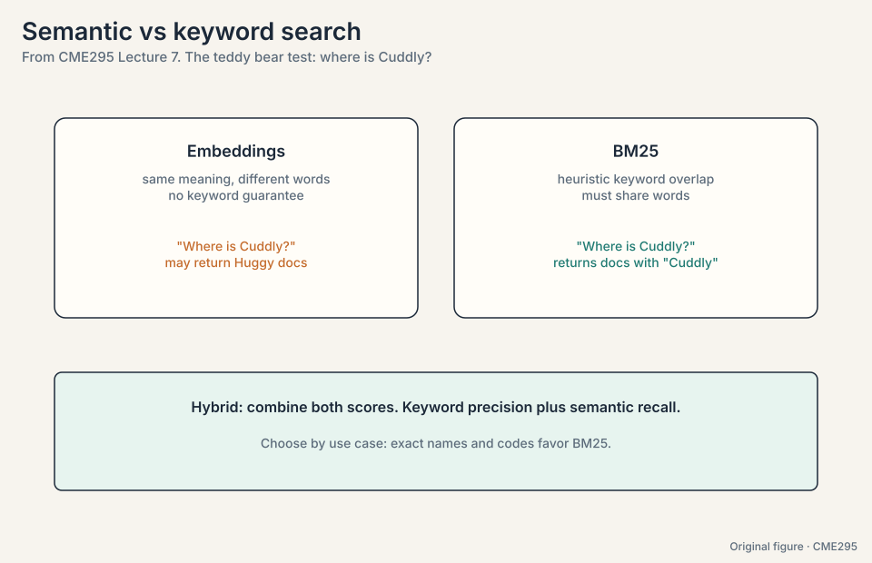
Three upgrades address real failure modes:
- HyDE (39:05). Queries are short questions. Documents are long prose. One encoder compares them poorly. Generate a fake answer document with an LLM, embed that, and search with it. Query and corpus finally look alike.
- Contextual retrieval. Naive chunks lose their document context. Ask an LLM to write a short context blurb per chunk and prepend it. Many LLM calls, but each shares the document as a common prefix.
- Prompt caching (41:40). Same prefix means same activations: compute once, look up after. Providers charge roughly 1/10 for cached input tokens. Design prompts so the repeated parts come first.
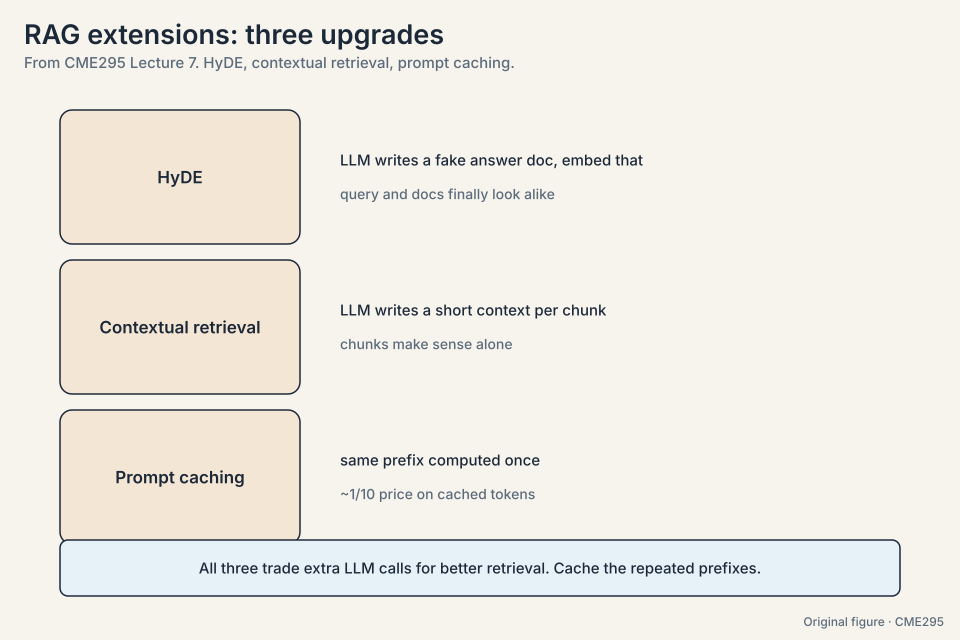
The problem: how do you know the retriever is good
Labels say which chunks are truly relevant. Four metrics, all borrowed from search. Work them on a toy ranking of three chunks with true relevance scores [3, 0, 2], ideal ranking [3, 2, 0]:
DCG = 3 + 0/log2(2)... use the standard form: DCG = 3 + 0/1 + 2/log2(3) = 3 + 0 + 1.262 = 4.262 ideal DCG = 3 + 2/1 + 0 = 5.0 NDCG = 4.262 / 5.0 = 0.852
- NDCG (49:41). Discounted cumulative gain, normalized by the ideal ranking. Relevant docs score more when ranked higher. Normalization makes 1.0 mean “matches the optimal ranking”. Raw DCG depends on how many relevant docs exist, so the normalization puts every query on a 0-to-1 scale.
- Reciprocal rank (54:12). 1 over the rank of the first relevant doc. First relevant at rank 3 scores 1/3 = 0.33. Simple, correlates well.
- Precision@k. Of the top k retrieved, how many are relevant. Top 3 with 2 relevant: 0.67.
- Recall@k. Of all relevant docs, how many made the top k. 4 relevant in the corpus, 2 in the top 3: 0.5.
MTEB (Massive Text Embedding Benchmark, 57:05) is the standard embedding benchmark: run your retriever, compare the metrics.
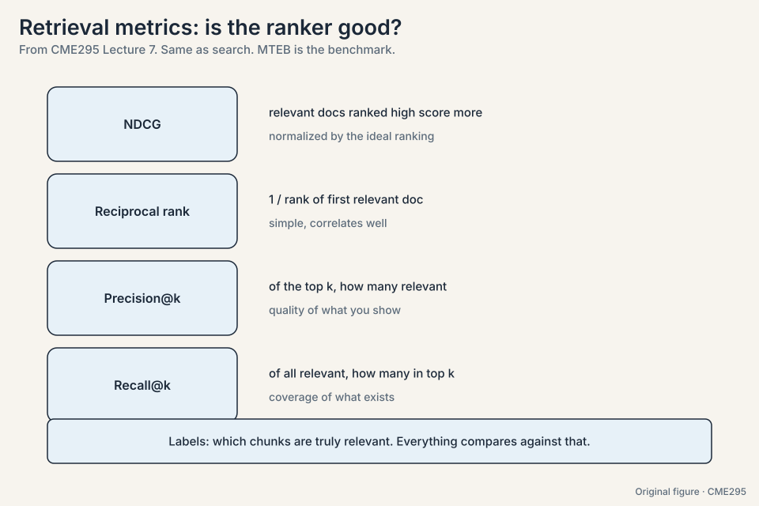
Subchapter: the reranker’s cost arithmetic
The cross-encoder runs full attention over query+chunk pairs: ~100x slower per pair than the bi-encoder’s dot product. The arithmetic: 100 candidates x 512 tokens x full attention. At ~50ms per pair on a GPU, the rerank stage costs 5 seconds: unacceptable per query. Three controls. Fewer candidates: rerank 20, not 100: 1 second. Smaller reranker: a distilled cross-encoder at ~10ms per pair: 200ms for 20. Async prefetch: rerank while the user reads. The decision rule: the reranker buys precision, priced in latency. Spend it where the top-1 answer matters (QA, support), skip it where recall suffices (exploratory search).
When the top-1 answer is the product: question answering, support bots, anything where the user reads one result. The bi-encoder’s recall gets the right chunk into the top 100. the cross-encoder’s precision puts it first. Skip the reranker when users browse many results (exploratory search) or when latency budgets are tight: a well-tuned hybrid bi-encoder gets most of the gain. The decision rule: rerank when position 1 pays, not when position 20 does. Sweep it: measure NDCG@10 against rerank latency for candidate counts 20/50/100. The curve flattens fast: going 20 to 100 usually buys <1 point of NDCG for 5x the latency. Size at the knee.
Raw DCG depends on how many relevant docs exist for the query. A query with ten relevant docs can score higher than one with two, through no merit of the ranker. Dividing by the ideal DCG for that query puts every query on a 0-to-1 scale where 1 means optimal. When you only care about the first good answer: question answering over the top chunk, or a UI that shows one result. It ignores everything past the first hit, which is fine if the user never looks further.
The problem: unstructured knowledge is not enough
RAG fetches text. Some questions need live capabilities: inventory, computation, sending email. The lecture anchors on IBM’s definition (62:19): “tool calling allows autonomous systems to complete complex tasks by dynamically accessing and acting upon external resources.”
The teddy bear example: “find a teddy bear near me.” The model
cannot know live inventory, but a find_teddy_bear(location) API
can. Three stages
(70:59):
1. PREDICT. preamble holds the API plus docstring (not the implementation):
"find_teddy_bear(loc): returns nearby stores with teddy bears in stock."
LLM maps the query to arguments: find_teddy_bear(loc="Stanford")
2. EXECUTE. run the function. No LLM involved.
returns: [{"store": "Campus Toys", "stock": 3}, {"store": "Palo Alto Kids", "stock": 0}]
3. RESPOND. feed the result to the LLM:
"Campus Toys near Stanford has 3 teddy bears in stock."
The model sees the interface, never the implementation. Training uses two SFT pair types: query-to-arguments (tool prediction) and full-history-to-answer (response mapping). But strong modern models often skip SFT: write an explanation of the tool, evaluate it offline against an eval set of expected calls, and let a reasoning model iterate the explanation until it passes. The fixed explanation ships in the preamble at inference.
Tool categories: informational (search APIs for news past the cutoff), computation (turn the query into code, execute it, read the answer), actions (send the email, hit send for real).
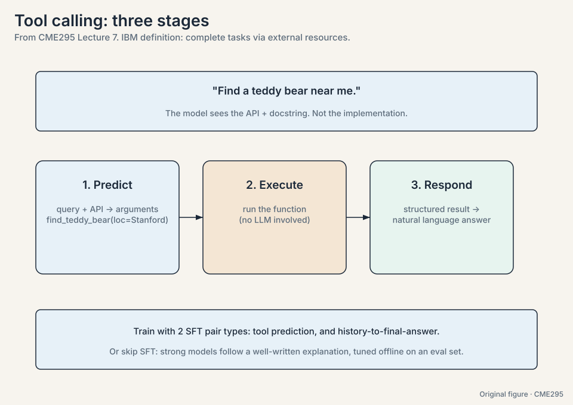
Subchapter: the JSON schema contract
The model emits tool calls as structured JSON against the function’s schema:
{"name": "find_teddy_bear",
"arguments": {"loc": "Stanford", "radius_km": 5}}
The schema is the contract: types, required fields, enums, and
descriptions per parameter. Three design rules. Names are UX:
find_teddy_bear beats fn_12. The model reads names to choose.
Descriptions are the manual: one line per parameter saying
what it wants (“radius_km: search radius, default 5”). Strict
schemas: reject malformed calls at parse time, before
execution. The failure mode the schema prevents: the model emits
{"location": "Stanford"} when the schema says loc. Strict
validation catches it. The error message teaches the retry.
Subchapter: parallel tool calls
Independent calls batch in one turn: get_store_hours("Campus
Toys") and get_store_hours("Palo Alto Kids") have no
dependency, so the model emits both and the runtime runs them
concurrently. Latency falls from 2x to 1x. Dependent calls
serialize: the second call’s arguments come from the first
call’s result. The model must learn the difference: emit
independent calls together, wait on dependencies. The harness
enforces it: results return tagged per call, and the model
continues when all resolve.
The problem: one preamble cannot hold every tool
Context is finite, APIs get lost in the haystack, conflicting APIs confuse the model, and no deployment serves every user’s tools at once. The fix is tool selection (86:39, Google DeepMind): show the LLM the query plus a list of tool names with one-line descriptions, ask it to pick the relevant few (also called routing, 87:21), then put only those full APIs in context. A student notes this is RAG over tools. The lecturer agrees it can be.
The toy: 50 tools registered. The router sees “find a teddy bear
near me” plus 50 one-liners, and picks find_teddy_bear and
get_store_hours. The preamble now holds 2 APIs instead of 50.
Hand-written tool definitions do not port across models. MCP (Model Context Protocol, Anthropic, 89:17) standardizes: an MCP server serves tools (function implementations), prompts (usage templates), and resources (external databases), with a 1:1 connection to an MCP client in the LLM host. The book provider writes the book tools once. Every MCP client uses them.
Subchapter: MCP’s architecture, spelled out
Three parties, one protocol:
MCP host (the app: Claude Desktop, an IDE)
└─ MCP client (1:1 connection, per server)
└─ MCP server (the tool provider)
├─ tools: functions the model can call
├─ resources: data the model can read
└─ prompts: templates for using the above
The server advertises capabilities at connect time. The client exposes them to the model as tool schemas. The 1:1 client-per-server design isolates failures: one bad server cannot break the others. The 2026 reality: MCP won the standard war. Anthropic published it, OpenAI adopted it, every major host speaks it. Hand-rolled tool JSON still exists inside products, but cross-product tools are MCP now. The interview line: “MCP is USB for model tools.”
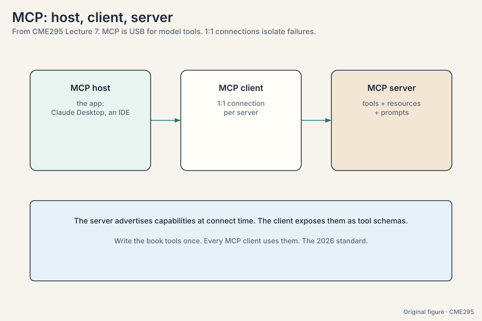
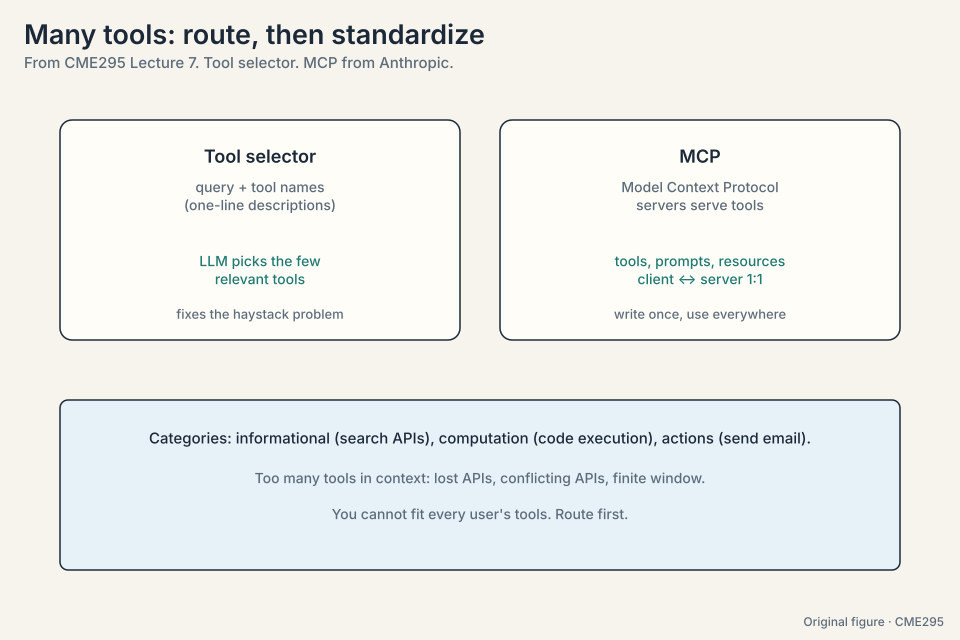
Agents are loops
An agent is a system that autonomously pursues a goal and completes tasks for a user. The difference from plain tool calling is the loop: reasoning between calls, multiple iterations until the goal is met.
ReAct (93:43, reason + act) decomposes the loop into observe, plan, act (94:34; the paper says think/observe/act, wording varies). Trace the thermostat example, “my teddy bear is cold”:
observe: temperature unknown. Must measure before acting. plan: call get_temp(). act: get_temp() = 65F. Colder than expected. plan: raise the temperature. act: set_temp(+5) -> 70F. observe: goal met (teddy is warm). Exit loop. respond: "I raised the temperature to 70F."
Each iteration checks the goal. The loop exits when it is met. Multiple agents can collaborate, which needs communication standards like Agent2Agent (Google, 99:52): defined skills, execution status, and cancellation.
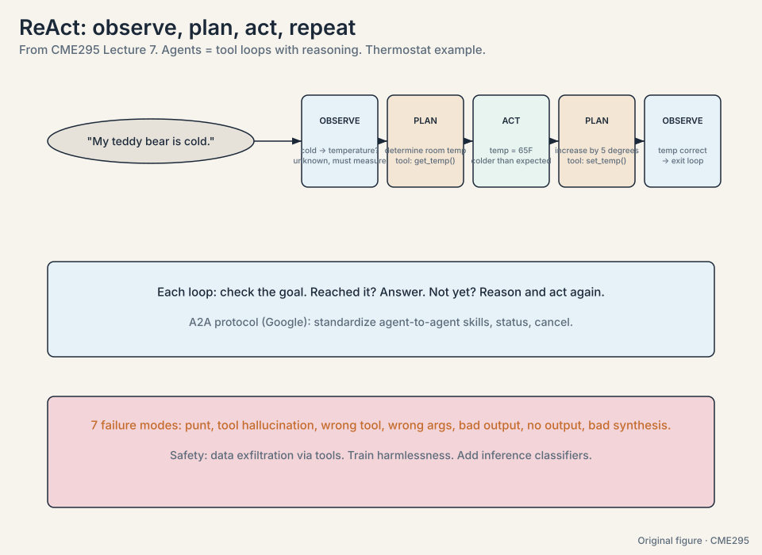
Subchapter: ReAct vs plan-then-execute
Two loop architectures:
- ReAct (interleaved): think, act, observe, repeat. Each step sees the last result. Adapts to surprises, compounds errors (Lecture’s seven failures).
- Plan-then-execute: plan the full sequence up front, then run it. Efficient when the plan is right, brittle when reality deviates. Replanning on failure recovers some robustness.
The tradeoff: ReAct pays per-step reasoning for adaptability, planning pays upfront for efficiency. The decision rule: ReAct for open-ended tasks with uncertain tools, plan-then-execute for known workflows (the plan is a cached ReAct trace). Production agents usually start ReAct and graduate to plans once the task distribution stabilizes.
The problem: agents fail in seven ways
Seven failure modes across the three tool-call stages, from the lecture’s debugging experience:
Prediction: (1) punt: the query needs a tool but the model
answers without one. Cause is either router recall failure (fix the
router) or the model not thinking to use tools (fix SFT/prompt). (2)
tool hallucination: calls find_bear when only
find_teddy_bear exists. The model is too weak (upgrade) or the API
names mislead (rename). (3) wrong tool: picks a plausible-but-wrong
function. Disambiguate API scopes. (4) wrong args: right tool,
bad arguments (coordinates 0,0). Check the context carries the
needed info, or add a location-finder tool with actionable errors.
Execution: (5) bad output: the tool itself is buggy. Fix the implementation, and return meaningful structured outputs instead of raw errors. (6) no output: for actions, silence is dangerous. The model may falsely confirm. Always return something, even an empty JSON.
Synthesis: (7) bad synthesis: the tool found Teddy and the model says “no bear found”. The output drowned in noise or the model cannot ground. Trim outputs, present them as meaningful objects.
With action comes risk. Data exfiltration (102:48): a prompt that tricks an email-writing tool into sending the user’s password out. Remedies come in two layers: training-time (harmlessness in SFT/RL data mixtures) and inference-time (safety classifiers watching the conversation, 104:29). The lecture cites the Agent Safety Bench and, from the day before the lecture, Anthropic’s report of a large-scale attack launched through Claude’s agentic capabilities: both attackers and defenses are getting more sophisticated.
The building advice: start small (one tool, one case), start with the most capable model to learn the headroom, then optimize latency and cost. Debug by reading the reasoning chains.
Subchapter: the debugging decision tree
Read the chain, then branch:
agent failed. Read the reasoning chain.
├─ it never called a tool → PREDICT problem
│ ├─ router did not surface the tool → fix router recall
│ └─ model did not think to use tools → fix SFT/prompt
├─ it called the wrong thing → PREDICT problem
│ ├─ nonexistent tool → rename APIs / upgrade model
│ ├─ wrong tool → disambiguate scopes
│ └─ wrong args → check context / add finder tools
├─ the tool misbehaved → EXECUTION problem
│ ├─ buggy output → fix the implementation
│ └─ silence → always return something, even empty JSON
└─ the answer ignored the tool result → SYNTHESIS problem
└─ trim outputs, present meaningful objects
One rule governs the tree: the cheapest fix wins. Most failures are tool outputs (silent, bloated, or raw errors), not model intelligence. Fix the tools before blaming the model.
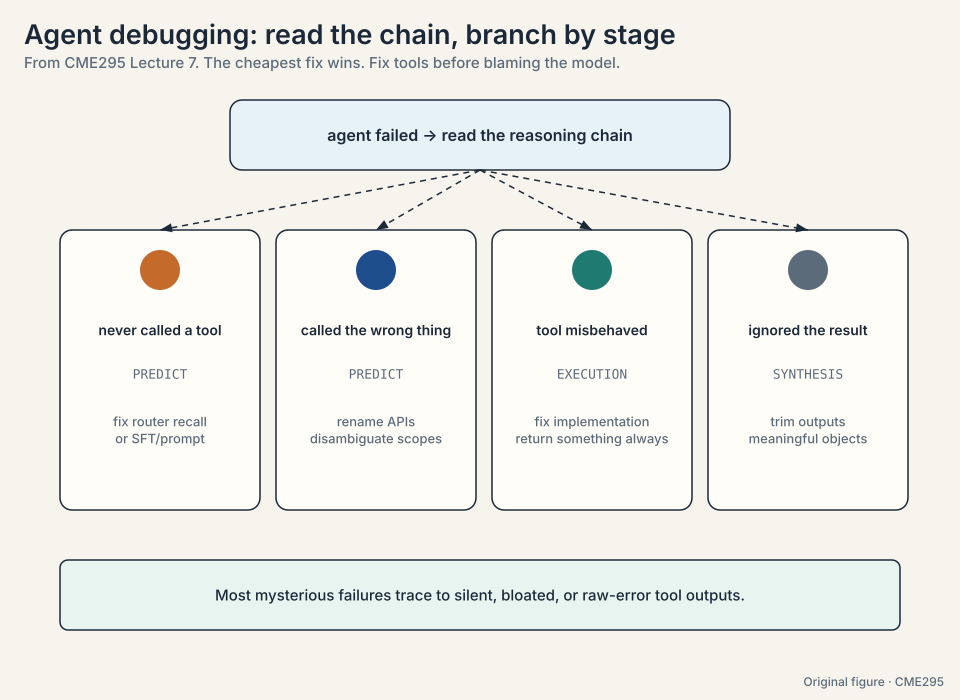
Read the chains. If it never called the booking tool: router recall or prompt. If it called with wrong dates: wrong args: check the context carried the dates, or the date format confused the model (add a date-normalizer tool). If the tool returned flights and the model picked wrong: bad synthesis: the output was a wall of fields and the model mis-grounded. Trim to airline, times, price. The decision rule: fix the cheapest stage first. Do not upgrade the model until the tools return clean, small, structured outputs. Distribution shift in the queries: users phrase dates and places differently than your tests. Log real failures, add them to the eval set, and fix the router and schemas against the real distribution.
Error compounds per step. Each iteration can mis-ground, pick wrong args, or misread a result, and the next step builds on the mistake. Single calls have one shot at failure. Loops have N. That is why large-scale agents are not running the world yet. Meaningful tool outputs. Most mysterious agent failures trace to a tool returning nothing, an error blob, or an ocean of fields. A small structured result with a status field fixes a whole class of loops.
Mapping back: each piece answers a connection problem
| Problem | Answer | How |
|---|---|---|
| The model is frozen at its cutoff | RAG | Retrieve, augment, generate: the prompt carries the fresh facts |
| Documents are too big to embed | Chunking | 500-token chunks: 1M tokens become 2,000 searchable vectors |
| Millions of chunks to search | Two-stage funnel | Bi-encoder recall to 100, cross-encoder precision to top k |
| Semantic search misses exact names | BM25 / hybrid | “Cuddly” must match “Cuddly”: keyword guarantees plus meaning |
| Queries look nothing like documents | HyDE | Embed a fake answer document. Query and corpus finally look alike |
| Is the retriever any good | NDCG et al. | The toy ranking scores 0.852 against the ideal |
| Text lookup is not enough | Tool calling | Predict arguments, execute, respond: the model sees the interface |
| Too many tools for one preamble | Tool selection + MCP | Route to 2 of 50. Standardize once, use everywhere |
| One call is not enough | ReAct | Observe, plan, act, check the goal, repeat |
| Loops fail in new ways | Failure taxonomy | Seven modes across prediction, execution, synthesis. Fix in groups |
| Action brings risk | Two-layer safety | Harmlessness in training, classifiers at inference |
The honest price
RAG pays in retrieval quality: it is only as good as the retriever, and stale or poisoned chunks become confident wrong answers. Chunking pays in context: cut wrong and meaning strands across boundaries. Cross-encoders pay in compute: full attention per pair, affordable only after the funnel. Tool calling pays in brittleness: APIs change, auth expires, outputs drift. ReAct pays in compounding error: N steps mean N chances to fail. Safety pays in capability: every guardrail is a behavior the agent cannot do. The honest theme of the chapter: connecting to the world trades the model’s self-containment for the world’s messiness.
Recap: the whole lesson on one screen
The story in eight steps. Each step answers the one before it.
- The cutoff freezes the model. Retraining risks regressions. Dumping everything hits context limits, needle-in-haystack loss, and per-token cost. The answer is retrieval.
- RAG: retrieve, augment, generate. “Who won?” plus the results article in the prompt. Retrieval quality is the whole game.
- Chunk deliberately. ~500 tokens, low-hundreds overlap, ~1500 dimensions. 1M tokens become 2,000 vectors at 12 MB. Cosine similarity picks the winner: 0.99 beats 0.29.
- Funnel the search. Bi-encoder recall to 100, cross-encoder precision to top k. Fast first, careful second.
- Semantic plus keyword. Pure embeddings return Huggy for Cuddly. Hybrid (0.5/0.5) scores B at 0.80 over A at 0.475. HyDE embeds a fake answer doc to bridge the gap.
- Measure the ranker. NDCG on the toy: 4.262 / 5.0 = 0.852. Reciprocal rank, precision@k, recall@k cover the rest. MTEB is the benchmark.
- Tool calling is three stages. Predict arguments from API plus docs. Execute. Respond. The model sees the interface, never the implementation. Select tools first. MCP standardizes.
- Agents loop. ReAct: observe, plan, act, repeat. Exit on the goal. Seven failure modes. Two-layer safety. Error compounds per step.
Go deeper
- Lecture 7 recording: https://www.youtube.com/watch?v=h-7S6HNq0Vg
- IBM Technology, “What is RAG?”: https://www.youtube.com/watch?v=T-D1OfcDW1M
- Lewis et al., Retrieval-Augmented Generation: https://arxiv.org/abs/2005.11401
- Yao et al., ReAct: https://arxiv.org/abs/2210.03629
- MCP specification: https://modelcontextprotocol.io/
Official sources and further reading
Official: - Lecture 7 recording (YouTube): timestamped above. - Lecture 7 slides (PDF), CME295 Autumn 2025. - Lewis et al., “RAG” (2020): https://arxiv.org/abs/2005.11401 : the original recipe. - Yao et al., “ReAct” (2022): https://arxiv.org/abs/2210.03629 : the agent loop.
Further reading: - Reimers and Gurevych, “Sentence-BERT” (2019). - Gao et al., “HyDE” (2022). - Anthropic, “Contextual Retrieval” (2024). - Anthropic, “Model Context Protocol” (2024). - Google, “Agent2Agent Protocol” (2025). - Zhang et al., “Agent Safety Bench” (2024).
Caveats from these sources. Chunk sizes, embedding dims, and the ~100-candidate cut are typical values, not laws. HyDE “may or may not work” per the lecture: test it. The Anthropic attack report is dated the day before the lecture. A2A and MCP are young standards. details move.
Connections to the other courses
- CS336 L10/L18: inference systems that serve RAG and tool-calling workloads.
- CS224N L14: reasoning and agents from the NLP side.
- CME295 L02: bi-encoders reuse BERT-style encoders. GQA/MQA keep agent context windows affordable.
- CME295 L03: prompt caching and context limits from the inference lecture. Guided decoding for structured tool outputs.
- CME295 L08: agent evaluation: failure-mode taxonomy meets benchmarks.
Sources
- VIDEOLecture 7 slides (PDF), CME295 Autumn 2025
- PAPERLewis et al., Retrieval-Augmented Generation for Knowledge-Intensive NLP Tasks (2020)
- PAPERYao et al., ReAct: Synergizing Reasoning and Acting in Language Models (2022)